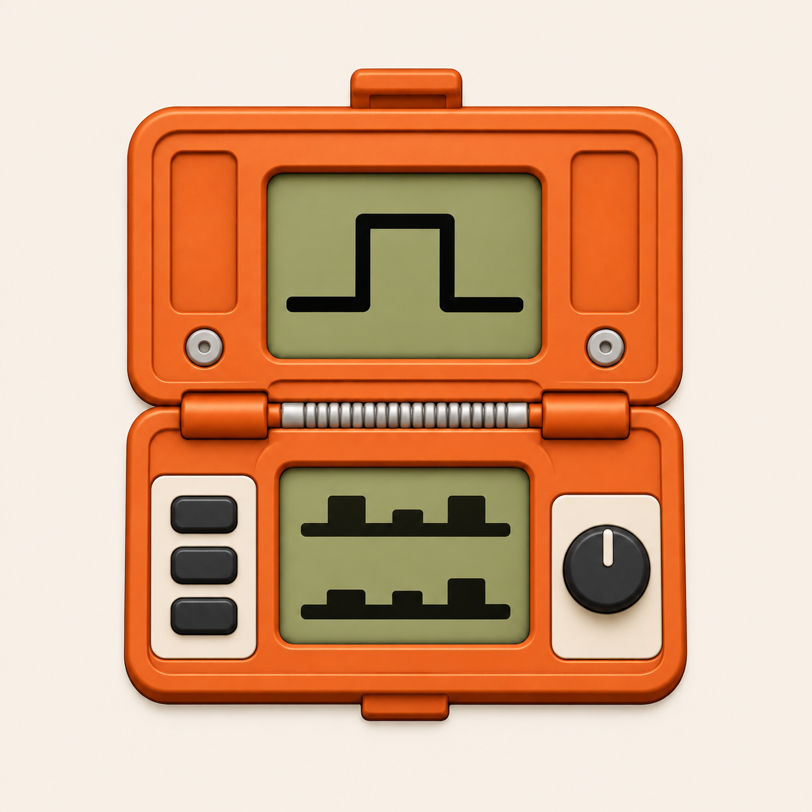

Tetorica SM510 Synth
Explore SM510 buzzer output and SM511 ROM melodies.
Pulse output
—
ROM 0x02
Step Sequencer maps notes to C♯5–C7 and rounds timing to 62.5 ms.
Software square wave in 12-tone equal temperament, C3–C6. A4 is 440 Hz. Adjust this voice’s level in Mixer.
Use lcd-buzzer to play the selected chip, sm510 and sm510-direct for R writes, or sm511 for melody ROM commands.
Step sequencer
Ready
Sound chip
SM510 buzzer demo · DK-52
On this Game & Watch board, R1 drives a piezo buzzer with a fixed square carrier at a nominal . The game program switches the R1 gate on and off to make short beeps, pauses and bursts. This configuration has no waveform, pitch or timbre selector.
Choose an example, toggle the numbered gates or change the step time, then play. Try joining two on steps for one longer beep.
The demo models the DK-52's digital R1 signal. The physical piezo and enclosure affect how the board sounds.
R1 from Code
Open Files → examples → sm510-r1.js and press Run. Bit 0 of REG_R gates the fixed R1 carrier. The wait sets the beep length in seconds.
const sm510 = await useSoundChip("sm510");
await sm510.write(sm510.REG_R, 0x1);
await sleep(0.1);
await sm510.write(sm510.REG_R, 0x0);CPU cycles and the R latch
At 32,768 Hz, two master-clock ticks make one CPU machine cycle. LAX and ATR each take one machine cycle. An alternating LAX / ATR sequence can change the R latch every two machine cycles, about 122 µs apart. The divider advances every master tick and R1 follows bit 2 while enabled.
write(REG_R, value) accepts a 4-bit accumulator value. The low two bits drive R1 and R2. Try Files → examples → sm510-cycles.js to place writes at exact machine-cycle offsets. The timeline starts with R and the divider at zero.
const pulse = sm510.build(b => {
b.atCycle(2).write(sm510.REG_R, 0x1);
b.atCycle(1640).write(sm510.REG_R, 0x0);
});
await sm510.playCycles(pulse);Other SM510 configurations can output R directly from software. SM511 and SM512 have a separate melody controller that plays pitches and lengths from ROM.
Tetorica SM510 Synth
- Direct R
- R1 is toggled by writes at whole machine cycles. Each half-wave fits a ROM page with
LAX,ATR, no-ops and a two-cycleTL. The pulse display shows the resulting pitch. - DK-52
- Each note gates the same 4,096 Hz carrier. Rests close the gate.
- Equal temperament
- The comparison source plays software-tuned notes from C3 to C6.
- Sequence
- Eight eighth-note steps, 40–240 BPM, with rests and a common note length.
- Software controls
- Volume, short fades to reduce clicks, and mono WAV export.
Effects to try
Choose SM510 → Direct R, SM511, or lcd-buzzer to hear the pitch changes in these Files → examples scripts.
- Short beep.
short-beep.jsseparates two notes with a rest. - Chirp.
chirp.jsclimbs quickly through a series of pitches. - Trill or alarm.
trill.jsalternates two pitches, pauses, and repeats.
MAME DK-52 board · CPU timing · SM510 R outputs · SM511 melody controller